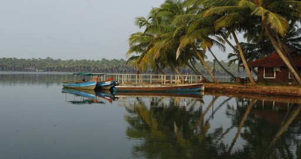

BEKAL FORT
Bekal Fort was built by Shivappa Nayaka of Keladi in 1650 AD, at Bekal. It is the largest fort in ... Chandragiri fort near Kasargod was also built during this period.

CHANDRAGIRI FORT
Chandragiri Fort is a fort built in the 17th century, situated in Kasaragod District of Kerala, South India. This large squarish fort is 150 feet above sea level and occupies an area of about seven acres by the side of the river Payaswini.

CHERUVATHUR LAKE